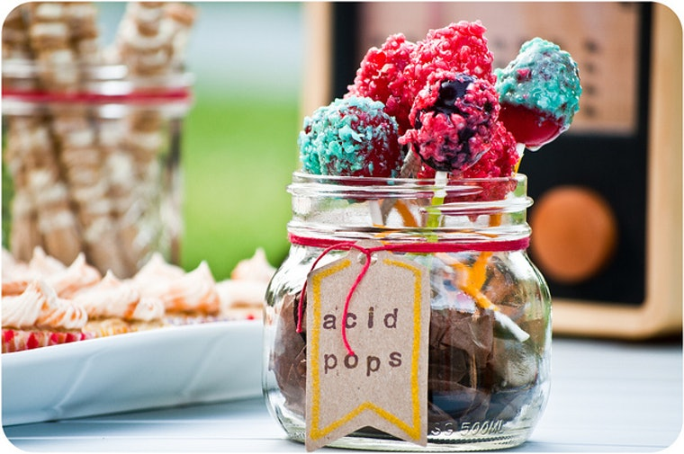
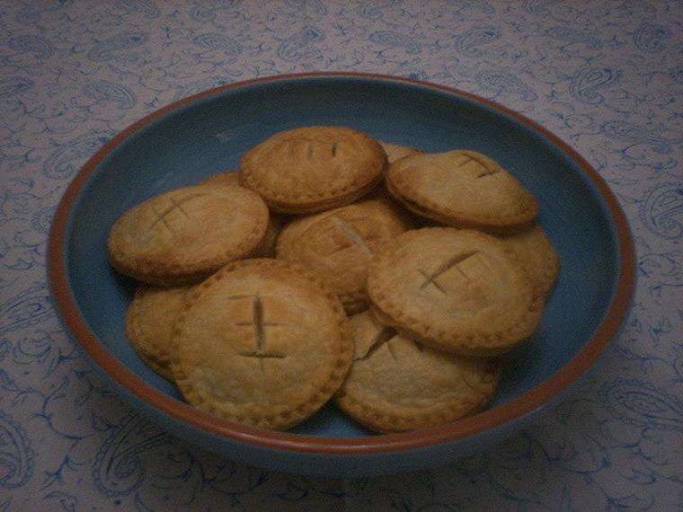
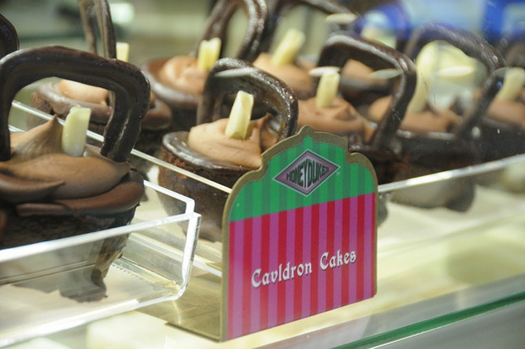
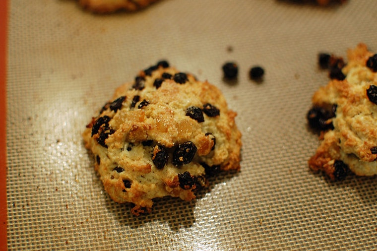
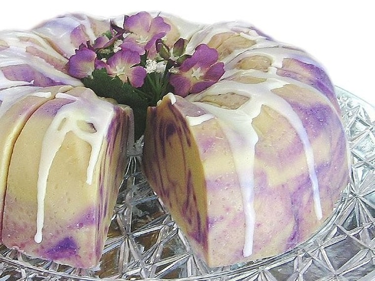
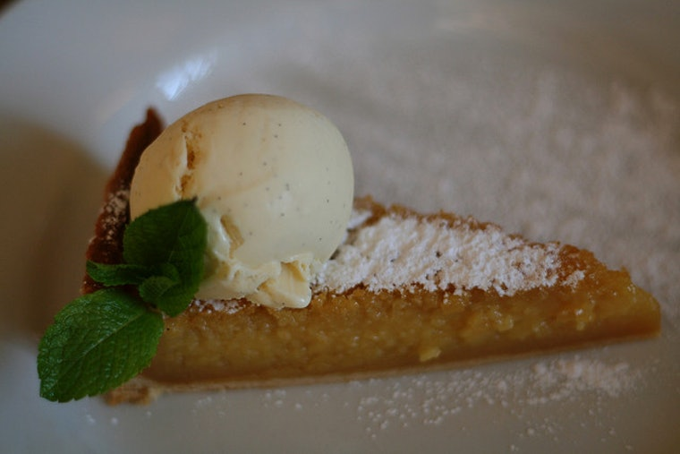
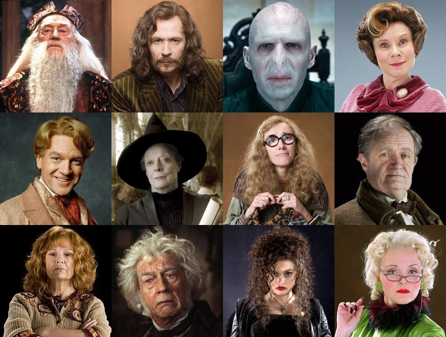

Welcome Wizards & Witches
Hogsmeade, Scotland-Great Britain
The Three Broomsticks is a popular inn and pub in the all wizarding village of Hogsmeade and is often frequented by students from the neighbouring Hogwarts School of Witchcraft and Wizardry. The inn is often warm, crowded, and a bit smoky, but clean and welcoming. A mirror behind the bar reflects the cosy atmosphere, and drinks such as Butterbeer and Firewhisky are served in glasses and in foaming pewter tankards, as well as gillywater, mulled mead, red currant rum, and even cherry syrup and soda with ice and an umbrella. The Three Broomsticks is owned and operated by Madam Rosmerta.Menu
Order your favourites NOW!
All options available

Acid Pops-20 Knuts/each
These dangerous confections from Honeydukes can burn a hole in your tongue, which would probably decrease the ability to enjoy the sweet. Pumpkin Pasties-2 Sickles/each
These dangerous confections from Honeydukes can burn a hole in your tongue, which would probably decrease the ability to enjoy the sweet. Cauldron Cakes-10 Sickles/pack
Harry shares these with Ron on his very first trip on the Hogwarts Express. I picture them as those hot lava cakes with creamy centers. Yum.

Hagrid's Rock Cakes-3 Sickles/each
Hagrid isn't known as the best cook, but his rock cakes are one of the worst dishes. Instead of cakes, they're really mostly rock. Mrs. Dursley's Pudding-1 Galleon/each
I wondered why the characters of Harry Potter ate so much custard, before finally realizing that "pudding" = "dessert." Treacle Tart-5 Sickles/each
This classic dish is often served at Hogwarts feasts, so obviously it's got to be good. In fact, all of the Hogwarts feasts sound amazing... though the fact that it's cooked with house-elf labor disqualifies it from rising higher on the list.Acid Pops-20 Knuts/each
These dangerous confections from Honeydukes can burn a hole in your tongue, which would probably decrease the ability to enjoy the sweet.Pumpkin Pasties-2 Sickles/each
These dangerous confections from Honeydukes can burn a hole in your tongue, which would probably decrease the ability to enjoy the sweet.Cauldron Cakes-10 Sickles/pack
Harry shares these with Ron on his very first trip on the Hogwarts Express. I picture them as those hot lava cakes with creamy centers. Yum.Hagrid's Rock Cakes-3 Sickles/each
Hagrid isn't known as the best cook, but his rock cakes are one of the worst dishes. Instead of cakes, they're really mostly rock.Mrs. Dursley's Pudding-1 Galleon/each
I wondered why the characters of Harry Potter ate so much custard, before finally realizing that "pudding" = "dessert."Treacle Tart-5 Sickles/each
This classic dish is often served at Hogwarts feasts, so obviously it's got to be good. In fact, all of the Hogwarts feasts sound amazing... though the fact that it's cooked with house-elf labor disqualifies it from rising higher on the list.